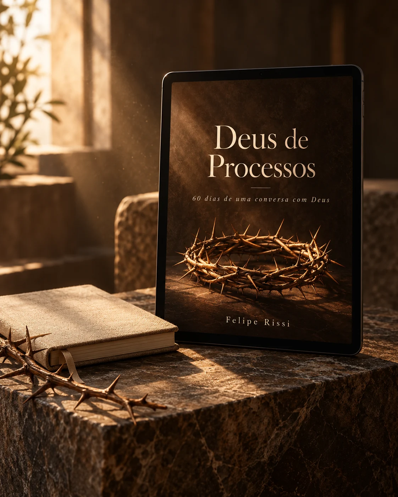

Deus de Processos, um devocional de Felipe Rissi
A sua história
não terminou aqui.
Leve sua dor a Deus e encontre direção para o próximo passo.
Uma leitura, uma oração, um dia de cada vez.
Ebook digital por R$ 24,99
- 60
- dias com Deus
- 10
- jornadas de leitura
- 179
- páginas para refletir
Tem dias em que
é difícil continuar.
O término. A traição. O abandono. Os planos que desmoronaram.
Talvez você não saiba por onde começar.
Você pode começar levando a Deus o que sente.
“Deus, o que eu faço com a vida que sobrou depois disso?”

Conheça o Deus de Processos
60 dias de uma
conversa com Deus.
Um devocional que aproxima as histórias da Bíblia das dores da sua vida. Para ler, refletir e orar no seu ritmo.
Uma pergunta que encontra você
Cada dia começa com uma pergunta e uma passagem bíblica.
A Palavra perto da sua vida
Reflexões simples sobre o que você está vivendo.
Uma mensagem para o coração
Textos em primeira pessoa, fundamentados na Bíblia, e espaço para sua oração ao final de cada jornada.
Sua jornada pode começar aqui
“Por que Deus
permitiu que isso
acontecesse comigo?”
Essa é a pergunta do primeiro dia. Uma leitura que caminha com Jó e abre espaço para as suas próprias perguntas.
Jornada 1 · Dia 1 · Jó 1–2Não confunda a Minha permissão com a Minha ausência. Eu estava lá quando aconteceu.
Não pense que os melhores capítulos da sua vida ficaram para trás. Segure a Minha mão.
A sua história não terminou no que aconteceu com você.
fundamentada na Palavra.
10 jornadas. Um dia de cada vez.
Comece por onde
mais dói hoje.
São 6 dias em cada jornada. Você pode seguir a sequência ou começar pelo tema que mais fala com seu momento.
Encontre sua próxima leitura01Quando tudo desaba
“Por que Deus permitiu que isso acontecesse comigo?” e “Eu cansei de ser forte, Deus.”
02Quando o coração não descansa
Reflexões para quando os pensamentos não param e o amanhã traz medo.
03Quando o passado ainda machuca
Leituras sobre as feridas que ficaram e a dificuldade de perdoar.
04Quando sua identidade é restaurada
Um convite para olhar para seu valor diante de Deus e dar o primeiro passo.
05Quando o vazio não passa
Reflexões sobre pertencimento e o que você espera que o amor de alguém preencha.
06Intimidade com Deus
Espaço para voltar à Palavra, aprender a orar e conversar com o Pai.
07Relacionamentos
Leituras sobre quem saiu da sua vida e sobre a possibilidade de amar novamente.
08Quando a promessa demora
Para os dias em que a vida parece parada e Deus parece estar em silêncio.
09O preço do chamado
Perguntas sobre entrega, propósito e os passos da sua caminhada.
10Batalhas espirituais
Reflexões para continuar e terminar bem a caminhada que você começou.
Comunidade fechada PROCESSO
O recomeço também
pode ser junto.
Um espaço para ler o devocional, compartilhar perguntas e aprofundar sua caminhada com Deus.
Leitura com companhia
Vamos caminhar pelo devocional juntos.
Palavra e direção
Explicações bíblicas e conselhos para o dia a dia.
Encontros para aprofundar
Reuniões sobre os desafios do processo.
Um lugar para pedir oração
Compartilhe pedidos e ore em comunidade.
A comunidade é um adicional opcional. Você pode comprar apenas o ebook.
Uma leitura.
Uma oração.
Um novo começo.
Você não precisa resolver toda a sua vida hoje.
Separe um momento para cuidar do próximo passo.
Ebook digital
Deus de Processos
Seu devocional de 60 dias, por Felipe Rissi.
R$24,99
Pagamento único
- 60 leituras e reflexões bíblicas
- 10 jornadas, no seu ritmo
- 179 páginas em formato digital
- Mensagens e espaço para oração
Adicional opcional no checkout. Pagamento único, sem mensalidade.
Você será direcionado ao checkout.
Acesso ao ebook após a confirmação da compra.
Antes do seu primeiro passo
Ainda tem
alguma dúvida?
O livro é físico ou digital?
Esta oferta é do ebook digital Deus de Processos, com 179 páginas, por R$ 24,99. As imagens são representações ilustrativas.
É só para quem passou por um término?
Não. As leituras também abordam abandono, espera, comparação, medo, identidade, propósito e intimidade com Deus.
Preciso conhecer a Bíblia?
Não. As reflexões usam linguagem simples para explicar as histórias e aproximá-las da sua vida.
Como funciona a leitura?
A proposta é uma leitura por dia durante 60 dias. São 10 jornadas de 6 dias. Você pode começar pelo tema que mais fala com seu momento e seguir no seu ritmo.
O que são as mensagens em primeira pessoa?
São textos fundamentados na Bíblia, escritos como uma conversa com Deus. É um recurso do devocional para convidar você a refletir e orar.
A comunidade está incluída no ebook?
A comunidade PROCESSO é um adicional opcional por R$ 9,99, com pagamento único e sem mensalidade. A compra do ebook é independente da comunidade.